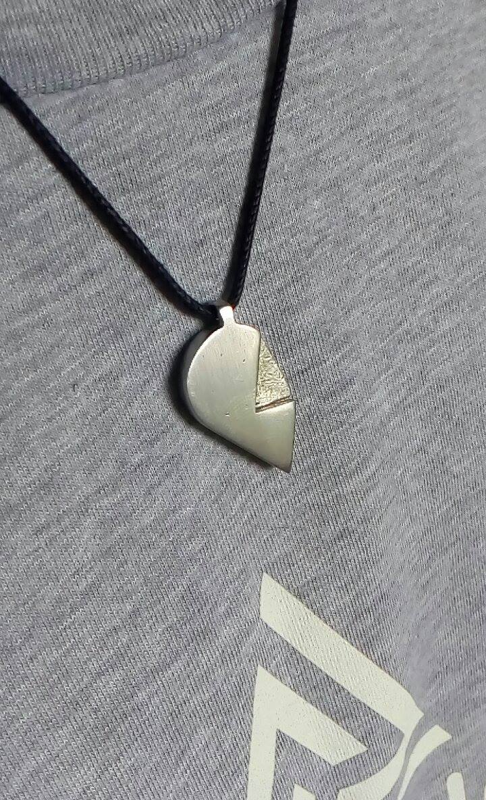
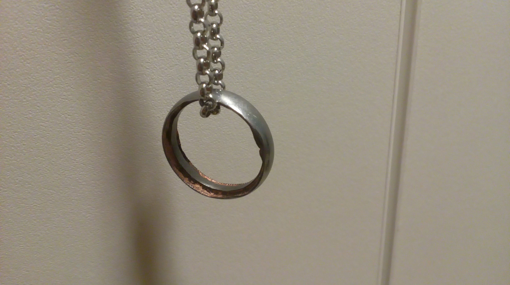
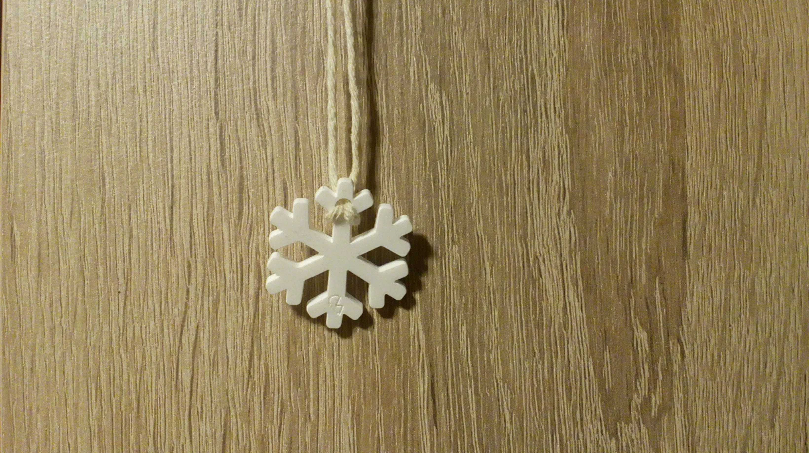

Hi, I'm Deep! I'm a first year student studying Product Design Engineering at Loughborough University. I'm also a hobbyist Web Designer, Developer, Jeweller, Game Developer and Electronics Enthusiast. This website serves as my portfolio and an introduction to my CV. If you wish to contact me, details are at the bottom of the page. Take a look at some of my creations!
About Me!
I'm a Web Developer and Engineer currently studying at Loughborough University. I come from Birmingham and I play the guitar and make my own Jewellery in my free time. You might find me at a Hackathon somewhere in the UK, or spot me somewhere on the web. Wherever it is, I'm sure you'll catch me in the middle of a Project.
My Creations!
My projects span a wide variety of media, be they web based, electronics oriented, engineering challenges or simply tests of my hand tool skills, they're documented below. Click to learn more!
My Handheld Games Console
For my Extended project qualification, I spent 9 months, researching, prototyping, designing and manufacturing a Handheld Games Console. I begun the research phase of the project in July of 2016, and presented my finished product in March of 2017. My full write up is availiable here, if you are interested. The casing was sourced and machined by hand out of a block of mahogany, nickel silver bar stock, 3mm white acrylic and 1mm aluminium sheet. The device is powered by a Raspberry Pi Zero (the W model had not been released at this point in time), running off a 2Ah Lithium Polymer battery. The Battery is charged by a TP4056 charging circuit, and uses a car reverse view monitor as its screen, as a cheap, if power inefficient display.
BackChat, the school's newspaper
BackChat is a student-led newspaper that was published half-termly. I led a team of 3 developers including myself to create a Jekyll-based website where writers could write articles in rich text, run it through our system to convert those articles to Markdown, and upload it to GitHub where it would be hosted. The site has a lightweight responsive template, and is one of my proudest achievements, being developed in less than three months, September - December 2016, during the course of my EPQ. You can view it at backchat.kefw.org
Our Entry for HackTheHolidays 2016
HackTheHolidays is a christmas-themed Hackathon, where teams have 24 hours to create something technological and christmas themed. Me and my friends worked together to produce a Floppy Drive-powered musical instrument, driven by arduinos, playing a MIDI version of Silent Night. One of our group created a program to convert MIDI files into a sequence of PWM signals, the other wrote code to drive the drives read heads off the PWM signals, whereas I worked on wiring up the physical circuitry, help debug issues, and attempted to boost the audio to something audible to humans. The instruments work as driving the read head with a PWM signal makes the drive vibrate and emit a noise proportional to the Frequency of the PWM signal. Once we had the list of frequencies and the lengths of time they were played, they were sequentially played, creating music.
CAGE, my Javascript Game Engine
CAGE stands for Chrome Application Game Engine, as it is a Game Engine originally intended for the now unfortunately discontinued Chrome Application platform. The Engine, howeve, is written completely in Javascript and works just as well for websites. It began as my attempts to build a game from this tutorial from somethinghitme.com back in 2014. However while this taught me a lot about how games work, it was a tangled mess of code by 2017, so I scrapped the project and decided to use what I'd learned to create a game engine from scratch, based on the same principles as the tutorial but using ES6's class structure to create a hierarchical structure. My full writeup is available here and the repo for the engine is here
My Jewellery
I create Jewellery as a hobby, as I enjoy the process of manufacturing them using traditional Gold or Silversmithing methods, combined with modern technology such as Laser Cutters. Some of my designs are shown below.

Pewter Self-interlocking heart - Any two identical hearts join to form a full heart. Cast in an MDF mold and hand sanded. I manufactured 25 for Christmas 2015.

Coin Ring - A ring formed only from a Two Pence coin. The Circumference was peened on an anvil with a hammer, then the ring was mounted in a Lathe was polished, then the inside of the ring was bored out to fit.

Acrylic Snowflake necklace - Simple laser cut design, worn on parcel string. I set myself a challenge of creating 200 pieces of jewellery for less than £10, to see what materials and processes I could find that still produce a high quality product. I gave these out on Christmas 2016.
My full CV is availiable here . A summary of my education, achievements, skills and positions of responsibility is below.
Education
Loughborough University: 2017-2022
MEng Product Design Engineering
Modules studied include:
Mathematics for Manufacturing Engineering
Engineering Science
Manufacturing Design
Materials and Manufacturing Processes
Product Design (Ergonomics & Visualisation)
King Edward VI Five Ways: 2015-2017
A Levels and Extended Project Qualification
Grades Achieved:
Mathematics: A*
Physics: A*
Further Mathematics: A
Computer Science: B
EPQ - The Design and Manufacture of a Handheld Games Console: A*
King Edward VI Five Ways: 2010-2015
GCSEs and Free Standing Maths Qualification
Grades Achieved:
Design & Technology: Systems and Control Technology: A*
Mathematics (Higher Tier): A*
English Language: A
Computing: A
Biology: A
Chemistry: A
Physics: A
Latin Language: A
Latin Literature: B
Gujarati: B
General Studies: B
Geography: B
Religious Studies: B
English Literature: C
FSMQ - Free Standing Maths Qualification: C
Achievements
I'm proud of the things I have created, and the things I have achieved, from my grades to the things I've done for others, and those include:
King Edwards VI Five Ways School Leaving Exhibitions - 2017
Edgbaston Proprietary School Award - 2017
Hobbs Prize for EPQ - 2017
Created my own Handheld Games Console - June 2016 - March 2017
Created my own Game and Game Engine - 2012 - February 2017
Designed, Created, Packaged and Distributed 200 necklaces, within 3 days, with a budget of £10 for Christmas 2016 - December 2016
1st Place at HackTheHolidays, as part of a team - December 2016
Attended HackTheMidlands, my first hackathon - October 2016
Led a team to create a fast, responsive website for the School Magazine - September - December 2016
Gold in Senior Maths Challenge, Reached Senior Kangaroo - October 2016
Gold in Biology Challenge - 2014
Volunteer Medicine Deliverer - 2014
Positions of Responsibility
Technology Prefect, at King Edward VI Five Ways - 2016-2017
Helped students of all years design and implement a wide variety of projects.
Lead Developer for Backchat, at King Edward VI Five Ways - September 2016 - December 2016
Led a team of three to design, develop and implement a website, while also advising the Editor-in-chief on layout and core design principles with the physical edition of the magazine. Built tools to allow non-specialists to upload articles with only basic training required.
Volunteered with Laser Pharmacy - 2014
Delivered medicines bi-weekly to patients unable to travel to the pharmacy
Skills
Technical Skills
5+ Years Hobbyist experience with common Web Technologies
Experienced with Git - School Newspaper is hosted on Github Pages
Proficiency with Microsoft and Google Office products
Well versed with manual workshop tools - 500+ Hours experience
Experienced with Group and Time Management services such as Trello
Trilingual - English (Fluent), Gujarati (Fluent), Hindi (Proficient)
Additional Skills
Dependable interpersonal skills
I often work in groups of 3-5, and this tests my communication skills regularly. With the school website, at Hack The Holidays, at Hack The Midlands (another Hackathon) and countless other smaller projects. I have improved my communication skills significantly through these events, relaying technical information succinctly, updating team members on progress. I am empathetic and can help when others are in need (I am a listener on 7Cups.com) and I can present my findings and market myself as I did with my EPQ.
Experienced at leading a team
Through school group projects, personal projects, and the Newspaper Website project, I have learned how to independently and efficiently lead a team, collating feedback, delegating tasks to the most appropriate member while evenly distributing the workload, resolving practical as well as interpersonal issues with projects. I conduct myself professionally, reporting progress to the client, responding to issues and feedback clearly, ensuring a high quality of work. Unlike hobby projects, no corners could be cut, and that pride in my work has stuck with me since.
Diligent, work-minded
My EPQ spanned most of Year 13, while I was sitting 4 A-levels. I quickly learned how to manage my time and motivate myself, without sacrificing lessons, work, or my extra-curricular activities. I also volunteered at my local pharmacy in 2014, which taught me about personal and professional responsibility. I was delivering medicines by bicycle, seemingly always uphill. Despite being physically demanding, I had volunteered for a role I believed was valuable, and I never missed a shift, and I made sure all the medicines arrived in pristine condition. I learned to take pride in my work, no matter what or how challenging it may be.
Communicates clearly and efficiently with persons of many professions
Throughout my school life, I worked with a large group of people. Programmers, Electronics, Materials and Manufacturing Engineers, Artists, UX Specialists, Economists and Psychologists, among others, each at varying stages within their field. I learned that I needed to understand the appropriate terminology for each field to converse with them in a clear, concise way. All my projects reflect this, and this has helped me both when leading a team, and working within one.
Highly creative
I have worked on many projects over time, all of which required creative input,be it physically in terms of design, or laterally, when it comes to solving issues. This website serves as my portfolio, where you can see these.